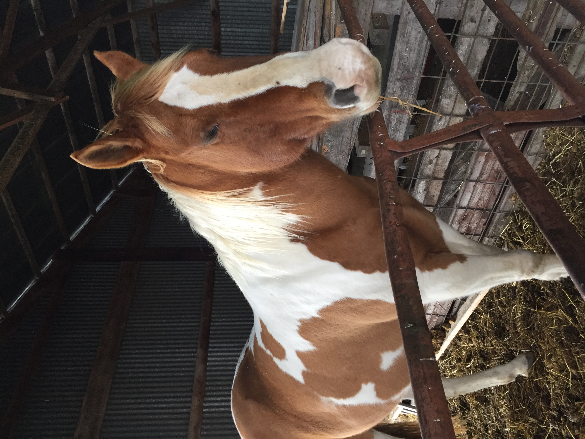
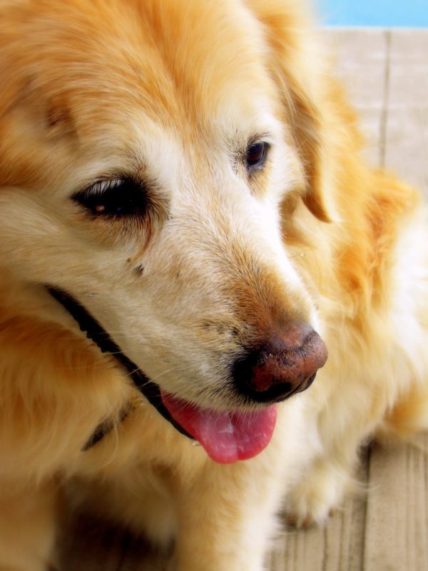

Deepfake – Uppgift
Enheten för Cybersäkerhet – Bildanalys
Nedan finns sex bilder. Ringa in ✓ om du tror bilden är äkta, eller ✗ om du tror det är en deepfake!
✓
Äkta bild
✗
Deepfake / AI-genererad

1

2

3

4
5

6